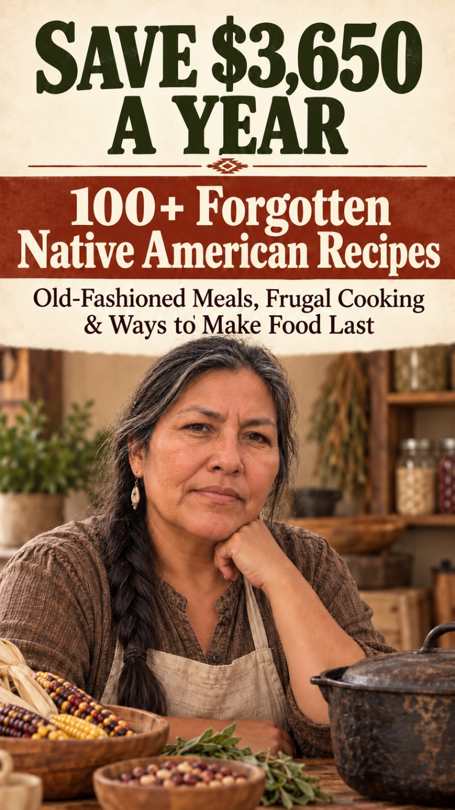

Naomi Kingbird · Frugal Kitchen
Good cooking never depended on expensive ingredients.
105 recipes built on corn, beans and squash, wild rice, fish and game, skillet breads, long soups and a pantry that keeps. Every recipe carries an honest cost line, a reason it saves, and a plan for what is left over. One pot of Three Sisters stew pays for the book.
- Instant PDF download
- Secure checkout
- 3-business-day money-back guarantee

save the bean broth!
01 The math
A book. A $3,650 year.
Every recipe opens with three lines: cost at home, cost bought prepared, and the difference. A few straight from the pages (U.S. planning ranges; your store will vary):
Your kitchen
How many suppers a week would you cook instead of ordering in?
A rough guide from the middle of each supper recipe's range in the book.
Start saving ·02 What's inside
15 chapters. 105 recipes. 356 pages.
Seven recipes and one short cooking-school lesson per chapter. Every recipe is labeled for what it is — a regional foodway foundation, a traditional ingredient foundation, or a modern frugal adaptation — with U.S. and metric measures.
- A cost line and a "why this saves" note on every recipe
- Step-by-step "look for" cues and fixes for what usually goes wrong
- Chapters on drying and trail staples, refrigerator pickling and the pantry
- A $10-a-day weekly plan and source notes for the historical material
03 About the cook
Naomi Kingbird. A frugal kitchen, kept working.
Naomi grew up around family kitchens, simple ingredients, garden harvests, cast-iron pans, pantry shelves and preserved food, and the habit of making the most of whatever was there. She never trained as a cook. She learned what to save, what to stretch, what to keep for winter, and how to treat plain food properly. The book says plainly that Native American food is not one single cuisine, and it does not present any one community's practices as universal.
"Some of these methods are old and some are new. The purpose is the same: cook well, waste less, and keep useful kitchen knowledge from being forgotten."Watch Naomi on YouTube
04 Get the book
100+ Forgotten Native American Recipes
- 105 recipes across 15 chapters, 356 pages
- What each dish costs at home vs. bought prepared
- Drying, refrigerator pickling and a whole chapter on second-day cooking
- Reads on phone, tablet or computer, or print it for the stove
Don't love it? Covered by our 3-business-day money-back guarantee.
05 Questions
Before you set the table.
Do I need to be an experienced cook?
No. Every chapter opens with a short cooking-school lesson — building flavour before liquid, judging by texture and aroma instead of the clock, planning the second meal while you cook the first — and the recipes build on those.
Are these authentic traditional recipes?
Each recipe says which it is. Regional foodway foundation and traditional ingredient foundation mean the dish is connected to documented ingredients or food practices; modern frugal adaptation means it is a contemporary household interpretation. Nothing is presented as an archival tribal formula, as ceremonial food, or as a substitute for community-specific knowledge. The book lists its sources — National Park Service, Smithsonian NMAI and First Nations Development Institute material among them.
How do I get it?
Right after checkout you're taken to a download page for the 356-page PDF. It opens on any phone, tablet or computer, and prints cleanly on ordinary paper.
Are the dollar figures guaranteed savings?
No. They're U.S. planning ranges, not quotes from a particular store. Prices change with location and season. Metric conversions and Celsius temperatures are included.
There are chapters on wild rice, fish and game. Is that for me?
Yes — they are written for a shop, not a hunting licence. The game chapter uses beef, turkey and chicken alongside venison, and the fish chapter uses salmon, trout and tinned fish. If you do hunt, fish or gather, those rules are yours to check locally.